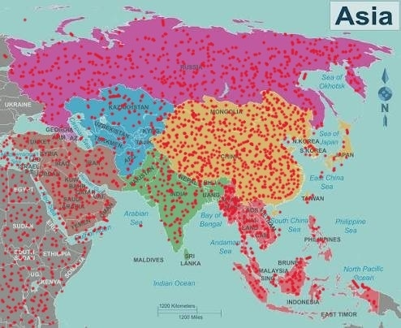

ASIA WILDFIRE WATCH · MAP PREVIEW
Asia wildfire map
Explore an illustrated map of Asia. Hover over the red dots for regional context. The image is for reference only and does not show live wildfire locations.
View the previewEXPLORE
Preview filters
This static reference map is focused on Asia. The time-period selector is a preview only; it does not filter live incident data.
Showing the illustrative map. No live wildfire data is connected.
Asia map preview
Illustrative map
llllllll.jpg. Hover a red dot for a tooltip or click it for regional details. Dots are illustrative, not verified or current fire activity.
For current emergencies: use official local alerts and emergency services. This preview is not a source of live incident information.